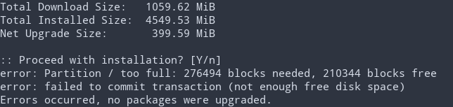
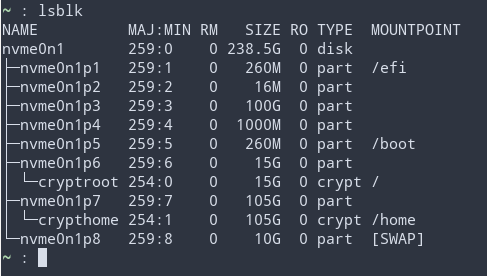

A few months ago I decided to try out Arch Linux and in the process I gave LUKS encryption a try. I decided to encrypt 2 seperate partitions, /home and /, while keeping /boot unencrypted. I remember looking around for a reasonable amount of space to allocate for each and I somehow ended up with 15G for / and 105G for /home. A bit skewed I know, but I reasoned that Arch is super tiny and my system is always clean af ;) As you could imagine I ran into the following issue some time after when running a system update.
Here is the standard disclaimer you see when you look at any partitioning tutorial. BACK YOUR SYSTEM UP. Also keep in mind that I have only tried this on my machine, the process may be a bit different for you. Now that's out of the way I'll show you what I did. Lets first take a look at my partition table.
So I wanted to extend my root partition (nvme0n1p6/cryptroot) atleast 10G and shrink my home partition (nvme0n1p7/crypthome) to accomplish this. I began to read around about resizing and determined that it is probably easier to extend an encrpted partition rather than shrink it. I also took a look at what Luks FAQ (section 2.15) had to say about it. In the end I decided that I will recreate my home partition to shrink it and then extend my root partition after.
I had an Arch live CD on hand so I just used that. Using a live CD to create your backups is a good idea because it allows you to backup partitions that are unmounted (and therefore not changing)
To backup an entire partition you can do:
$ dd if=/dev/nvme0n1p6 of=/external/root-backup.imgThe problem with dd is that empty space is also included in the img file. This was fine for my root partition, but not for my home partition which I needed to shrink. Instead I did:
$ tar --acls --xattrs -cpvf /external/home-backup.tar /homeI actually mounted the home partition before doing this from the live CD and it worked fine.
I opened the target drive using fdisk. You can shrink a partition by deleting it and creating a new partition with a smaller size. In my case I did exactly that, but I needed to start my home partition 10G after its original start point. This would allow room for the root partition to be extended as I wanted (which you can see if you refer to my drive layout above). To do this I needed to calculate which sector to start from. Each sector is 512 bytes which is equivalent to 1/2 KB's. Using that logic I did the calculation 2 (1KB) * 1024 (KB/MB) * 1024 (MB/GB) * 10 (GB's needed). (result) + (original parition start sector) = (desired offset). In my case that was sector 263243776.
At this point you're fully committed to seeing this through. I essentially followed the steps outlined on the Arch wiki. I also erased my disk as suggested. After that I created my new luks container and created a new ext4 file system.
At this point I remounted the filesystem and restored the files. It turns out that in this step I ended up nesting my home folder in /home/mnt/home because of how I mounted, which I realized after rebooting my system. I wasn't able to log in to my account, but I was able to log into the root account and fix the nested directories to resolve the issue.
mount /dev/nvme0n1p7 /mnt/home
$ cd /mnt/home
$ tar --acls --xattrs -xpf /external/home-backup.tarSince I leverage both of these files to unlock and mount my home partition, I needed to update them with the new UUIDs that were assigned to the mapped and encrypted partitions respectively. You do can find these UUID's by running `blkid` with the encrypted device unlocked.
$ blkid
...
/dev/nvme0n1p7: UUID="f92f3d51-ee2d-4624-b7d4-d2687dff843a" TYPE="crypto_LUKS" PARTUUID="..."
/dev/mapper/crypthome: UUID="5ec60c1b-1293-4fe6-86b0-2f0c14bc3875" BLOCK_SIZE="4096" TYPE="ext4"# /etc/cryptab
# Use UUID of encrypted partition
crypthome UUID=f92f3d51-ee2d-4624-b7d4-d2687dff843a /etc/luks-passwd# /etc/fstab
# Use UUID of mapped partition (i.e. /dev/mapper/crypthome)
UUID=5ec60c1b-1293-4fe6-86b0-2f0c14bc3875 /home ext4 rw,relatime 0 2I pretty much just follow the steps outline in this tutorial, but I will include them here for completeness sake.
I used fdisk here to delete and recreate the root partition. During the recreation step fdisk might ask you whether you want to remove the Luks header. You should answer No. Then fdisk will attempt to allocate the largest chunk of available memory which is exactly what I want.
Like before, unlock your encrypted volume in order to access the underlying filesystem.
$ cryptsetup open /dev/nvme0n1p6 cryptrootLike fdisk, cryptsetup will attempt to allocate as much space on the partition as is available, by default. -v provides an output message if the command is successful.
$ cryptsetup resize cryptroot -vI threw this command in there because it's probably better to clean up before resizing the filesystem. I think `resize2fs` will ask you to run this before anyways. -f forces the check even if the filesystem seems clean.
$ e2fsck -f /dev/mapper/cryptrootNow its time to extend the filesystem underneath. Like the other commands, by default it will allocate as much space as possible. After this the process is complete!
$ resize2fs -p /dev/mapper/cryptroot